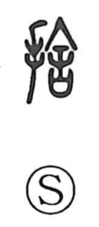

捨

Uncategorized
Kun: suteru | On: sha
to throw away ・ to cast aside ・ to abandon
Explanation
Shirakawa treats 捨 as a phonetic compound built on 舍, which supplies the reading sha. In his account, 舍 depicts a ritual act: a long-handled needle pierces the sai, a covenant vessel that held written petitions to the deity, thereby breaking the virtue of the prayer and nullifying its effect. With the hand element added on the left, 捨 shows the deliberate act of performing this piercing, and by extension the act of casting something off. From this ritual image the character broadened to its common sense “to throw away,” and further to notions of giving up, leaving out, and even allowing or forgiving—letting something go.